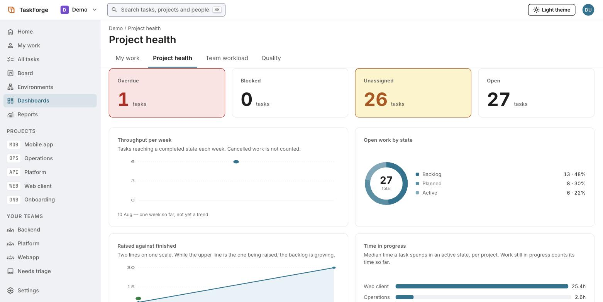
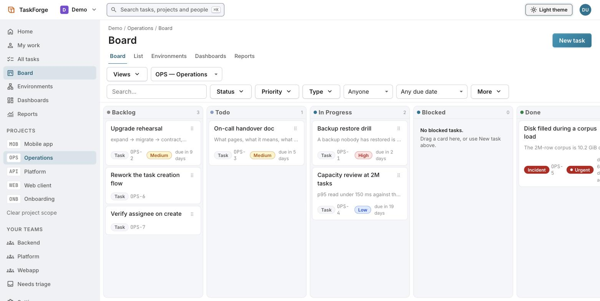
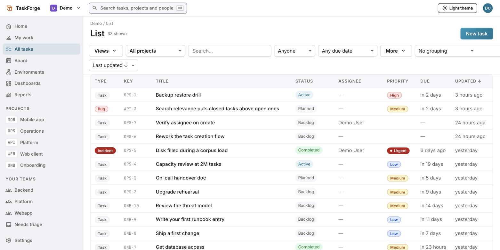

Open source · Apache-2.0 · Self-hosted
The work tracker whose core stays small
Every tracker starts simple and ends up configurable. TaskForge is built the other way round: a deliberately small core, and a closed set of seams that new capability plugs into instead of growing the middle. One Rust binary, one PostgreSQL, yours.

What we are trying to achieve
Simple at ten minutes. Still yours at two million tasks.
Work tracking forces a bad trade, and the trade is what this project exists to refuse. Here is the goal, stated as the three failures it is designed against.
Heavyweight trackers
Can model any process, and every team pays for configuration surface it will never use. The complexity is not optional; it is in the product you bought.
Lightweight trackers
Feel good until the first real requirement lands — a per-project role, a QA gate, an environment, an auditable history — and there is no seam to add it.
Self-hosted forks
Give you control, and extension usually means forking the core. The fork works, and then it can never be upgraded again.
So: a core small enough to hold in your head, a closed, typed extension registry that adding a plugin never has to modify, and a deployment that is one binary and one database on one machine — because a design that needs a broker to start is a design that has already grown past the goal.
The product
Board, list and dashboard — one filter language underneath
Screenshots from a running build, not a mockup. Switching view never changes which rows you are looking at, because the board and the list compile the same query.


Design principles
Make the wrong thing impossible, not discouraged
A rule in a document is a rule somebody will break on a Friday. Each of these is enforced by a compile error, a database grant or a CI gate instead.
Isolation lives in the database
PostgreSQL row-level security, with the application connected as a non-superuser
role. A forgotten WHERE clause cannot cross a tenant boundary — and
CI proves it as that role, because as the table owner every such test passes
whether or not the policies work.
Permissions you can explain
Effective access is the additive union of grants. No deny rules, no precedence
puzzle. Ask /permissions/explain why you cannot close something and
it answers with the grants that actually decided it.
Status is yours; state is ours
Teams rename and rewire statuses freely, above five permanent semantic states. Reports, automations and plugins are written against the states, so renaming a column cannot break them years later.
Nothing scans
The filterable and sortable field set is closed, each field has a named index,
and CI asserts no sequential scan on any tenant-scale table across every read
path. A filter on an unlisted field is a 400, not a slow query.
Every number is a link
Cycle time, lead time, throughput, age, time in state, raised against finished — a closed set of measures, each drilling through to the tasks behind it. A metric you cannot open is a metric you cannot check.
Fail closed, out loud
An uploaded attachment stays invisible until a scanner marks it clean — so a deployment with no scanner stores files nobody can download. Deliberate: the opposite default serves unscanned user content while appearing to work.
Run it
Docker and Docker Compose are the only prerequisites
No broker, no Redis, no object store. One binary, one database, one machine.
git clone https://github.com/CasualOffice/TaskForge
cd TaskForge
cp deploy/.env.example deploy/.env
$EDITOR deploy/.env # edit every value marked CHANGE_ME
docker compose -f deploy/docker-compose.yml --env-file deploy/.env up -d
That pulls the published image. Add --build to compile this repository
instead. Every variable, what it does, and what happens when it is left empty is
documented in
deploy/.env.example.
Two things to know before you start: the database connection is not TLS-encrypted in this release, so PostgreSQL must sit on a trusted network; and attachments upload but stay invisible until a malware scanner marks them clean.
Honestly
Phase 1 — a usable core, not a finished product
This project uses one word for done — gated: merged, tested, and protected by an acceptance gate that will catch it if it regresses. Of 47 Phase 1 items, 11 are gated, 22 more are merged with their tests passing, 13 are in progress and 1 is not started. Below is what that means in practice.
Working today
Projects, tasks, subtasks, dependencies, comments and tags. Board, list, saved views. Dashboards and reports. Environments and releases. Attachments with a scan pipeline. Sessions, tokens, CSRF and the permission model. Every screenshot on this page is one of them, running.
Designed, not built
Time tracking, automation rules, the plugin registry, per-project workflows, custom task types, per-workspace SMTP. Each has a design document and a row in the tracker; none of them exists yet.
Known and stated
The database connection is not encrypted. Full-text search degrades to a sequential scan under row-level security at two million tasks. The Phase 0 threat-model review was conducted by an agent, says so, and asks to be countersigned.
Questions
The ones worth asking first
What is TaskForge?
An open-source work tracker you run on your own infrastructure: one Rust binary plus PostgreSQL, licensed Apache-2.0.
Is it production ready?
Not yet. It is a Phase 1 usable core. 11 of 47 Phase 1 items carry an acceptance gate, 22 more are merged with tests passing, and 13 are still in progress. The tracker names every one; nothing is left for you to find out after you deploy.
How does it keep one customer's data from another's?
PostgreSQL row-level security, with the application connecting as a
non-superuser role, so a forgotten WHERE clause cannot cross a
tenant boundary. CI proves it as that role rather than as the table owner.
Can I rename statuses without breaking my reports?
Yes — that is the point of separating status from state. You name the columns; each maps onto one of five permanent states, and everything downstream is written against those.
What does it cost?
Nothing. Apache-2.0 and self-hosted: no per-seat pricing, no hosted tier.
Can I extend it without forking?
That is the architecture's whole purpose: extension happens at a closed, typed registry of seams so the core stays small. The plugin surface is designed and not yet built — until it is, extending means a fork, and saying otherwise would be the one claim on this page you could catch us on.